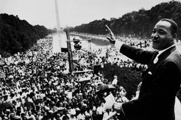
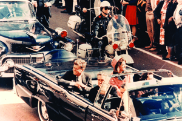
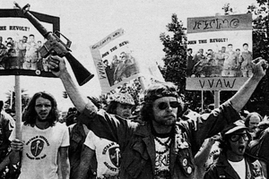

Lezione 20 La guerra fredda
La guerra fredda

-
180
215
-
195
140
-
195
183
-
195
115
-
260
720
-
155
479
-
145
452
-
220
537
-
345
280
-

CHICAGO
Il reverendo Martin Luther King è l'esponente principale del movimento per i diritti civili: in questa foto lo vediamo mentre pronuncia il celebre discorso I have a Dream (Io ho un sogno), che diviene immediatamente il manifesto di coloro che si battono per la fine della segregazione razziale e l'uguaglianza tra bianchi e afroamericani.

DALLAS
Un fotogramma della ripresa amatoriale che documenta l'assassinio del presidente Kennedy a Dallas: in queste immagini sfocate è racchiuso uno dei più luttuosi ed influenti eventi della storia americana. Il loro impatto culturale è paragonabile alle riprese televisive dell'attacco alle due torri dell'11 settembre 2001.
USA
Una mobilitazione studentesca contro la guerra del Vietnam nel 1968: la grande ondata di pacifismo rappresentata dai movimenti giovanili è decisiva per le sorti del conflitto.DALLAS
John Fitzgerald Kennedy, trentacinquesimo presidente degli Stati Uniti, viene ucciso a Dallas, in circostanze mai completamente chiarite, il 22 novembre 1963.
Nel corso della sua breve presidenza - era stato eletto il 20 gennaio 1961 - aveva suscitato grandi speranze, e aveva dovuto fronteggiare due episodi particolarmente significativi della Guerra fredda, come la crisi dei missili a Cuba e la costruzione del muro di Berlino.SAIGON
I partigiani filocomunisti e l'esercito regolare nordvietnamita conquistano Saigon, la capitale del Vietnam del Sud, il 30 aprile 1975, ponendo fine a un conflitto che andava avanti dalla metà degli anni cinquanta, quando il paese era stato diviso in due dopo il ritiro delle forze coloniali francesi.
Per gli Stati Uniti, che si erano impegnati in modo massiccio a fianco del Sud, è la prima vera sconfitta politico militare della storia.PRAGA
20 agosto 1968. L'invasione dei carri armati sovietici mette fine alla "primavera di Praga", il tentativo di liberalizzare il regime comunista cecoslovacco portato avanti dal segretario del partito Alexander Dubcek.
La nuova dirigenza imposta dai sovietici cancella tutte le riforme. Dubcek viene espulso dal partito e lavora per anni come manovale. Nel 1989, dopo il crollo del regime comunista, viene riabilitato e diventa presidente del parlamento federale, dove si batte contro le spinte secessioniste che travagliano il paese. Muore nel 1992 in un incidente stradale mai completamente chiarito.BONN
Il 21 ottobre del 1969 il socialdemocratico Willy Brandt diventa cancelliere della Repubblica federale tedesca e avvia una politica di accordi con l'Est che sarà, insieme ai trattati di non proliferazione nucleare stipulati in quegli stessi anni tra Stati Uniti e Unione Sovietica, uno dei pilastri della distensione tra i due blocchi.
Nel 1974, in seguito al coinvolgimento di un suo collaboratore in una vicenda di spionaggio, si dimette dal cancellierato, ma continua a battersi per la fine della Guerra fredda. Muore nel 1992. Sulla sua tomba vuole come epitaffio la scritta "ci ho provato".MEDIO ORIENTE
Tra il 5 e il 10 giugno 1967 Israele, che si sente minacciata dalla decisione egiziana di controllare il canale di Suez e di chiudere il golfo di Aqaba alle sue navi, combatte e vince la Guerra dei sei giorni contro Egitto, Siria e Giordania. Ha il tacito appoggio degli Stati Uniti, mentre l'Unione Sovietica è tiepidamente schierata con il fronte arabo.
Le conquiste territoriali israeliane sono ingenti, e acuiscono i contrasti in una delle regioni più instabili del pianetaBOLOVIA
Il 9 ottobre 1967 muore Ernesto Che Guevara, il guerrigliero argentino che era stato uno dei protagonisti della rivoluzione cubana e si era infiltrato in Bolivia con un piccolo gruppo di compagni nella speranza di sollevare i contadini poveri di quel paese contro il governo appoggiato dagli Stati Uniti.
La spedizione si risolve in un completo fallimento. Il Che, ferito in uno scontro a fuoco, viene ucciso a sangue freddo per ordine della Cia. Ma la sua figura diventa un simbolo della lotta per l'emancipazione dei popoli.